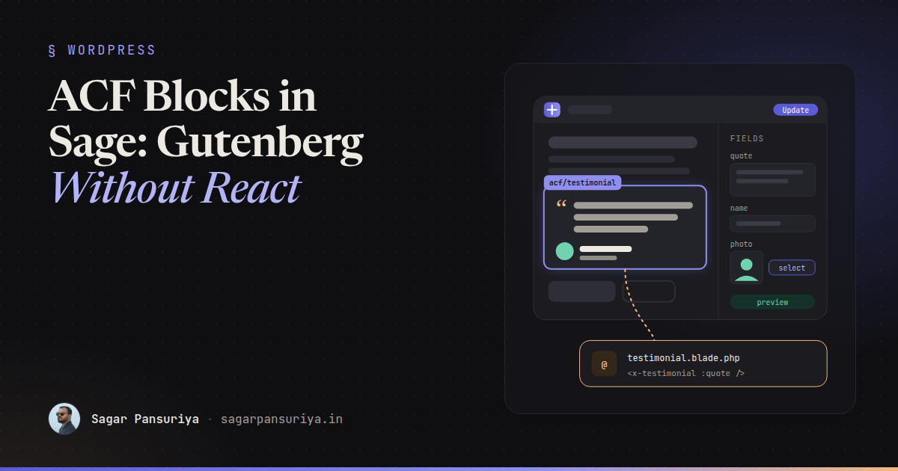
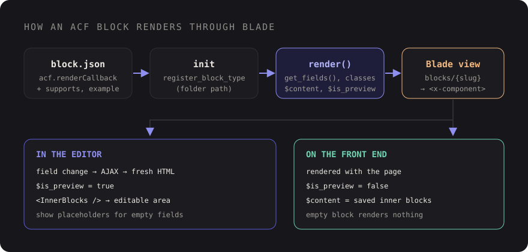

ACF Blocks with Sage and Blade: Custom Gutenberg Blocks Without React


Picture a Sage project where the team is fluent in Blade, Tailwind and ACF, and the client asks for
"proper Gutenberg blocks" so editors can build pages in the block editor instead of a wall of flexible
content fields. The official path says: learn React, JSX, @wordpress/scripts, block
attributes and deprecations. For a testimonial and a pricing table, that's a lot of new surface area.
There's a middle road that I think is underused: ACF Blocks. You describe the block in
a block.json file like any native block, define its fields in ACF, and render it on the
server with the same Blade views and components you already have. Editors get real blocks in the
inserter. Your team stays in PHP and Blade.
This post walks through the setup in Sage, how to pass fields cleanly into Blade components, how to
support nested blocks with InnerBlocks, how to make editor previews pleasant, and when it's
time to graduate to native React blocks.
How the pieces fit together
Since ACF 6, blocks are registered the WordPress way: a folder with a block.json, passed to
register_block_type(). ACF reads an extra acf key in that file to know it
should handle the editing UI and the rendering. The rendering part is either a PHP template
(renderTemplate) or a PHP callable (renderCallback). For Sage, the callback is
the useful one, because it lets us hand off to Blade.

Step 1: the block.json
I keep block definitions next to the rest of the theme source, one folder per block:
resources/
├── blocks/
│ └── testimonial/
│ └── block.json
└── views/
└── blocks/
└── testimonial.blade.php{
"$schema": "https://schemas.wp.org/trunk/block.json",
"apiVersion": 2,
"name": "acf/testimonial",
"title": "Testimonial",
"description": "A customer quote with name, role and photo.",
"category": "theme",
"icon": "format-quote",
"keywords": ["quote", "review"],
"supports": {
"anchor": true,
"align": ["wide", "full"]
},
"acf": {
"mode": "preview",
"renderCallback": "App\\Blocks\\render"
}
}Everything outside acf is standard block metadata: title, icon, category, and
supports flags that switch on core features like anchors and alignment. Newer ACF releases
also support apiVersion 3, which the iframed editor prefers, so check the ACF docs for the
version you run. Inside acf, mode controls whether editors see the rendered
preview or the field form by default, and renderCallback names the function that renders
the block.
Register every block folder on init, in app/setup.php:
add_action('init', function () {
foreach (glob(get_theme_file_path('resources/blocks/*/block.json')) as $file) {
register_block_type(dirname($file));
}
});Then create a field group in ACF with the location rule Block is equal to Testimonial, and
save it to acf-json so the fields live in version control with the block.
Step 2: one render callback for every block
ACF calls the render callback with the block settings, the inner content, a preview flag and the post ID. One generic function can map every block to a Blade view by name:
<?php
// app/blocks.php
namespace App\Blocks;
use function Roots\view;
function render(array $block, $content = '', $is_preview = false, $post_id = 0): void
{
$slug = str_replace('acf/', '', $block['name']);
$classes = collect([
'wp-block-acf-' . $slug,
! empty($block['align']) ? 'align' . $block['align'] : null,
$block['className'] ?? null,
])->filter()->implode(' ');
echo view("blocks.{$slug}", [
'block' => $block,
'fields' => get_fields() ?: [],
'content' => $content,
'isPreview' => (bool) $is_preview,
'postId' => $post_id,
'anchor' => $block['anchor'] ?? null,
'classes' => $classes,
])->render();
}Load this file from functions.php the same way Sage loads setup.php and
filters.php. Inside a block render, ACF points get_field() and
get_fields() at the block's own data, so the view receives formatted values: image arrays,
link arrays and so on, not raw field keys.
If you'd rather have a class per block and a generator command, the ACF Composer package from the Sage community wraps this pattern with more structure. The hand-rolled version above is small enough that I'd start with it and only switch if the block count grows large.
Step 3: Blade views that pass fields to components
The block view should be thin. Its only job is to translate ACF's field array into props for a plain Blade component, which knows nothing about ACF:
{{-- resources/views/blocks/testimonial.blade.php --}}
<div @if ($anchor) id="{{ $anchor }}" @endif class="{{ $classes }}">
@if (empty($fields['quote']))
@if ($isPreview)
<p class="rounded border border-dashed p-6 text-sm text-gray-500">
Add a quote in the block settings.
</p>
@endif
@else
<x-testimonial
:quote="$fields['quote']"
:name="$fields['name'] ?? ''"
:role="$fields['role'] ?? ''"
:photo="$fields['photo']['ID'] ?? null"
/>
@endif
</div>This is the same rule I use for flexible content: ACF-specific knowledge lives in one thin layer, and
UI components take plain props. If you've built a component library the way I described in
Blade components for WordPress with Sage and
Acorn, a new block is often just a block.json, a field group and a ten-line view around a
component you already have.
Note the empty state. Editors insert a block before they fill it in, so an empty block should show a helpful placeholder in the editor and render nothing on the front end.
Step 4: InnerBlocks for flexible content inside your block
Some blocks are containers: a section with a fixed heading style and background, but free content
inside. ACF supports nested blocks through an <InnerBlocks /> tag in your template.
Enable it in block.json:
"supports": {
"align": ["wide", "full"],
"jsx": true
}Then output the tag in the editor, and the saved inner content on the front end:
{{-- resources/views/blocks/feature-section.blade.php --}}
@php
$allowed = ['core/heading', 'core/paragraph', 'core/list', 'core/buttons', 'core/image'];
$template = [
['core/heading', ['level' => 2, 'placeholder' => 'Section heading']],
['core/paragraph', ['placeholder' => 'Write something useful…']],
];
@endphp
<section class="{{ $classes }} py-16 {{ ($fields['dark'] ?? false) ? 'bg-gray-900 text-white' : '' }}">
<div class="mx-auto max-w-3xl">
@if ($isPreview)
<InnerBlocks
allowedBlocks="{{ esc_attr(wp_json_encode($allowed)) }}"
template="{{ esc_attr(wp_json_encode($template)) }}"
/>
@else
{!! $content !!}
@endif
</div>
</section>A few details matter here. The attributes are JSON-encoded strings, because ACF parses this markup into
real editor components. Only one <InnerBlocks /> is allowed per block. And on the
front end, WordPress passes the rendered inner blocks to your callback as $content, which is
why the view prints it unescaped. ACF can also swap the tag for you on the front end, but being explicit
keeps the view readable and doesn't depend on that behaviour.
Restricting allowedBlocks is worth the effort. A section that accepts any block will
eventually contain a nested section containing a gallery containing a columns block.
Step 5: previews editors actually like
ACF previews are server-rendered: when an editor changes a field, ACF fetches fresh HTML for that block over AJAX. That keeps the preview faithful to the front end, but it has consequences.
- Load your front-end styles in the editor. Make sure the theme's editor stylesheet
includes the classes your block views use, or previews will look unstyled. If you use Tailwind, check
that the
resources/views/blocksfolder is part of what it scans. - Add an
exampletoblock.jsonwith sample field data, so the inserter shows a real preview on hover instead of a blank card. - Use
$isPreviewfor editor-only behaviour: placeholders, disabled links, or a static first slide instead of an autoplaying carousel. - Keep render callbacks cheap. Every field change triggers a render, so avoid slow queries or remote API calls in the view. Cache anything expensive.
"example": {
"attributes": {
"mode": "preview",
"data": {
"quote": "Our editors built the new landing page in an afternoon.",
"name": "Priya Shah",
"role": "Content Lead"
}
}
}What you give up, and when to go native
ACF Blocks are a great fit for design-system blocks with structured fields: heroes, testimonials, pricing tables, team grids, CTAs. They're a weaker fit when the editing experience itself is the product.
| Need | ACF Block | Native React block |
|---|---|---|
| Structured fields, server-rendered | Excellent | Fine, more code |
| Reuse Blade components and PHP logic | Direct | Only via server-side render |
| Inline rich text editing on the canvas | Limited | Built in |
| Instant preview while typing | Round trip per change | Client-side, instant |
| Block transforms, variations, custom toolbar controls | Limited | Full control |
| No plugin dependency for content | Needs ACF | Core only |
That last row deserves attention. ACF block field values are stored in the block's comment delimiter in
post content, which keeps them with the content but means they aren't regular post meta. You can't
query them with meta_query, and if ACF were ever removed, those blocks would stop rendering.
For most client sites that trade-off is fine. For a product or a plugin you distribute, it usually
isn't.
My rule of thumb: start with ACF Blocks. Graduate a block to React when editors keep asking to type directly on the canvas, when the preview round trip makes it feel sluggish, or when you need editor interactions that a form in a sidebar can't express. Graduating doesn't have to mean rewriting the front end either. A native block can still render dynamically in PHP and reuse the same Blade view.
A checklist for your first block
- One folder per block in
resources/blocks, each with ablock.jsonand anacf.renderCallback. - Register every folder on
initwithregister_block_type(). - Field groups saved to
acf-json, located by the Block rule. - One generic render callback that maps a block name to a Blade view.
- Thin block views that translate fields into props for plain Blade components.
- Helpful empty states in the editor, nothing on the front end.
jsxsupport and a restrictedallowedBlockslist for container blocks.- An
examplefor the inserter, editor styles loaded, and cheap render callbacks.
Blocks don't have to mean a React rewrite. For a Sage team, the fastest route to a good editing experience is often the one that keeps every line of front-end markup in Blade.
Discussion